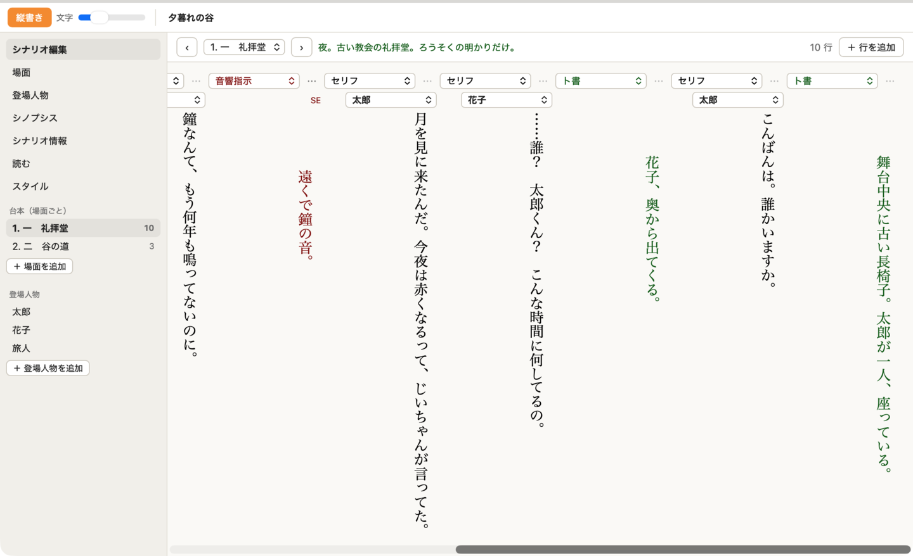
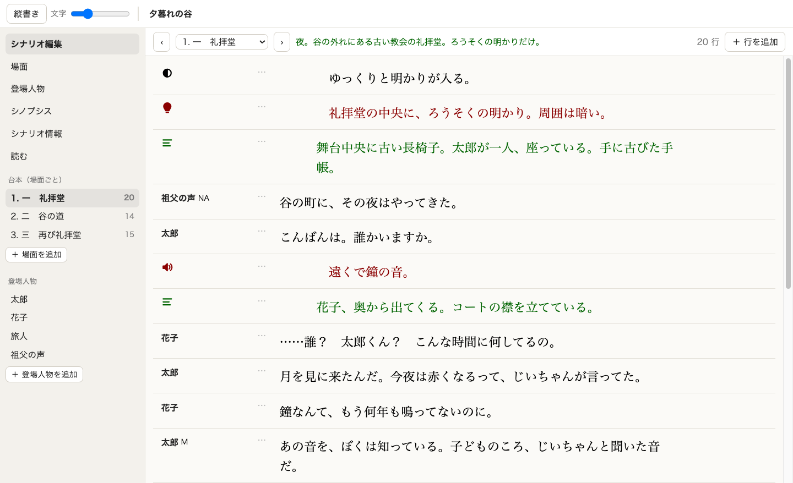
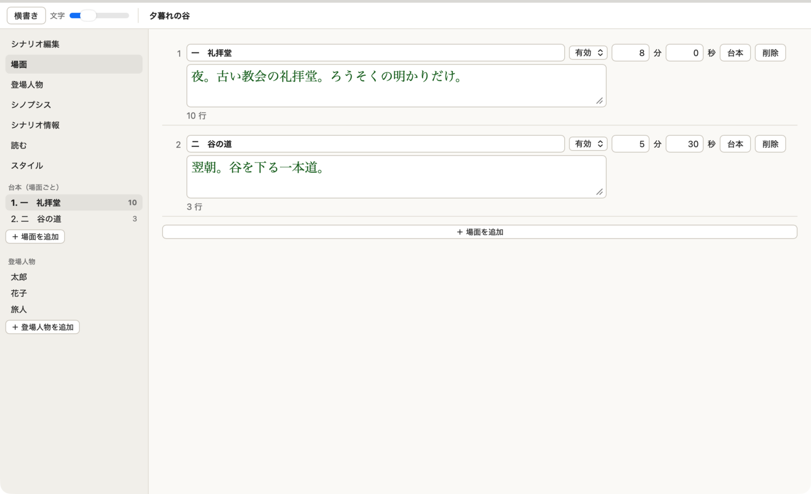
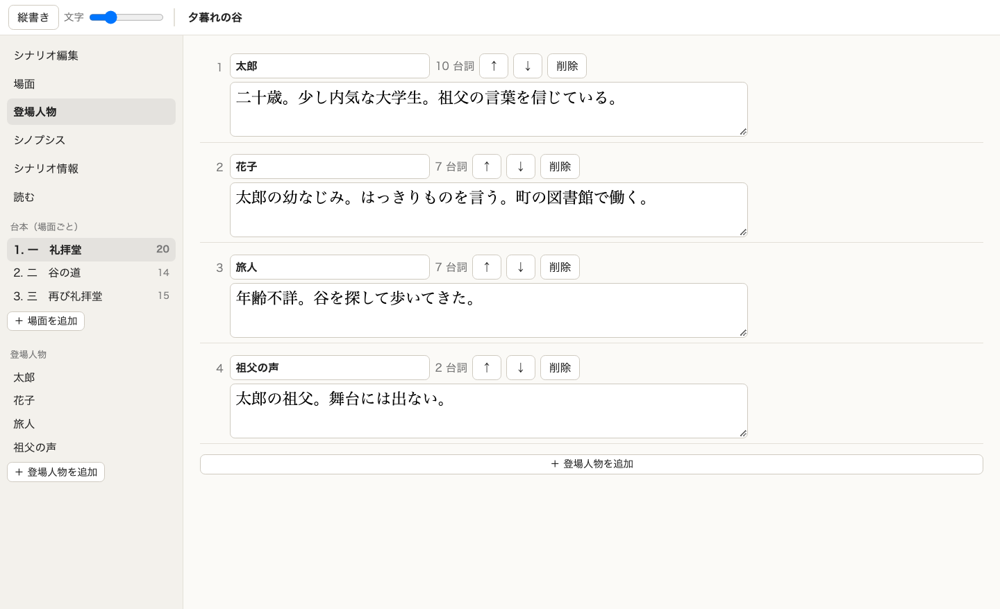
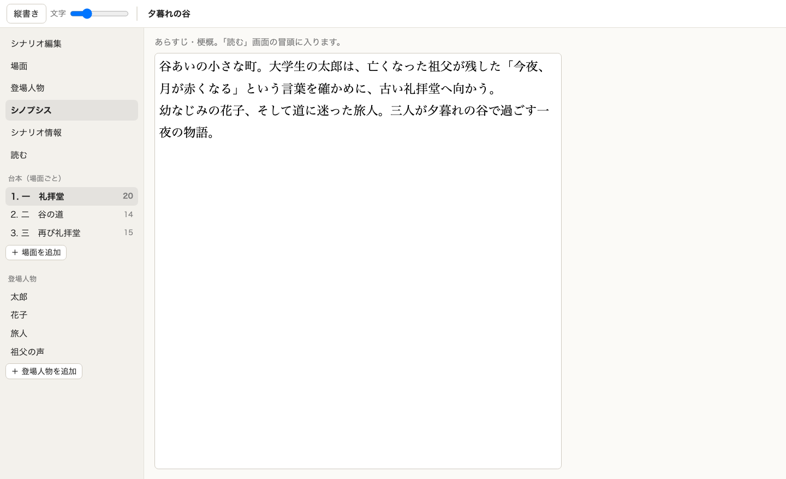
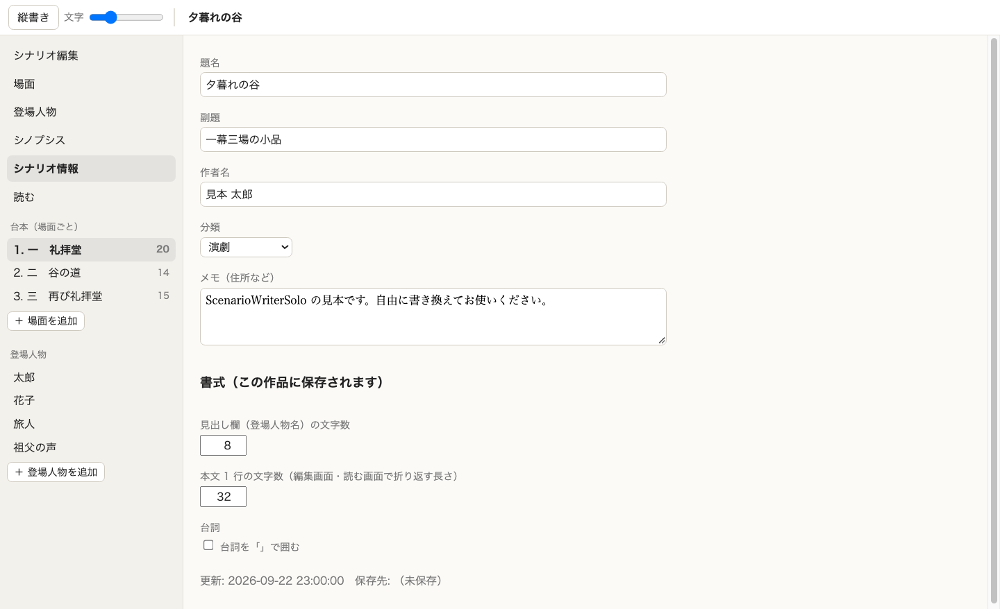
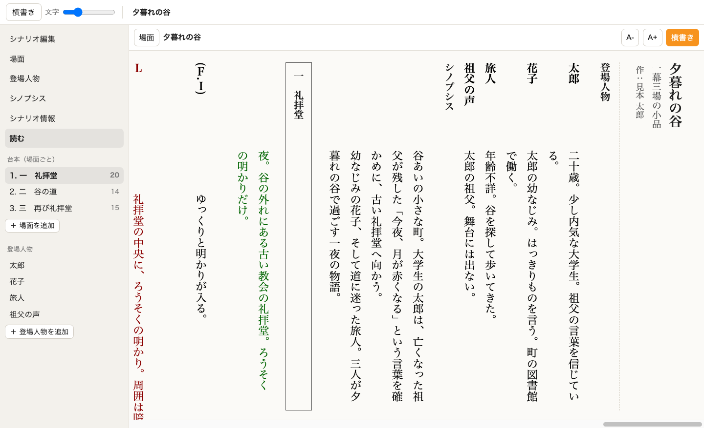
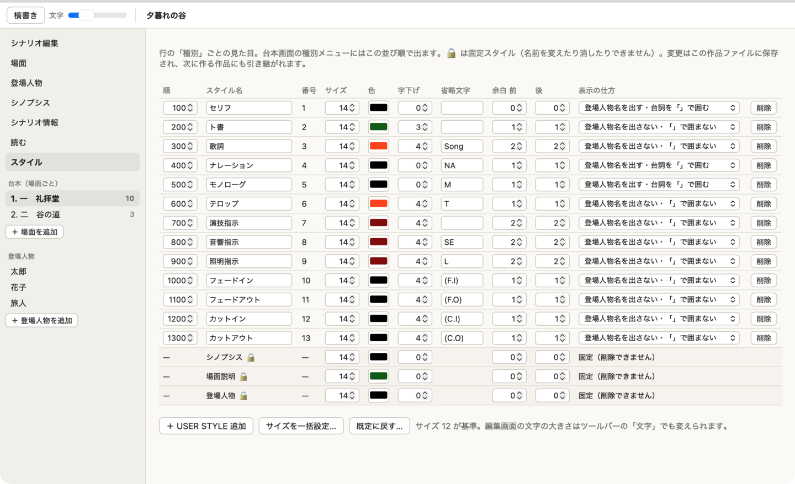
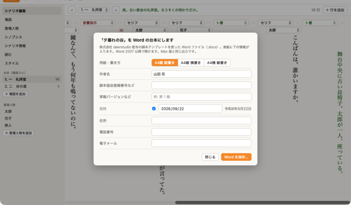

版 0.5 2026 年 9 月
ScenarioWriterSolo は、舞台・映像の脚本を書くためのひとり用エディタです。この Windows 版は、Mac 版 ScenarioWriterSolo と同じ作品ファイル（タイトル.scwd）を読み書きします。縦書きでの編集が目玉です。
ScenarioWriterWin_0.5.0_x64-setup.exe をダブルクリックします。.scwd ファイルがこのアプリに関連付けられます。インストールせずに使うときは ScenarioWriterWin-0.5.0-x64-portable.exe をそのまま起動します（Windows 10/11 の WebView2 が入っていれば動きます。この場合 .scwd の関連付けはされません）。
アンインストールは「設定 › アプリ」から。作品ファイルは消えません。
タイトル.scwd というファイルです。中身は文字（JSON）なので、Mac 版と相互に持ち運べます。.scwd は開けません。Mac 版で開いて保存するか、「ファイル › 旧形式（SQLite）の作品ファイルをまとめて変換…」で新しい形式にしてから持ってきてください。

1 行が「種別」「登場人物」「本文」の組です。上のバーで場面を選び、「＋ 行を追加」で末尾に行を足します。
| キー | 動き |
|---|---|
| Tab / Shift+Tab | 次の行 / 前の行へ（縦書きでは左 / 右の列へ） |
| Ctrl+Enter | この行の後に行を追加（Shift を足すと前に） |
| Ctrl+↓ / Ctrl+↑（横書き）、Ctrl+← / Ctrl+→（縦書き） | 次の行 / 前の行へ |
| Ctrl+Alt+矢印 | 行を前後に動かす |
| Ctrl+Z | 打った文字を元に戻す（その欄の中だけ） |
| Esc | 欄から抜ける |
ツールバーの「縦書き / 横書き」か Ctrl+Alt+T で切り替えます。縦書きでは行が右から左へ並び、各行の本文は上から下へ書きます。場面・登場人物・シノプシスの画面も縦書きになります。この設定はアプリが覚えていて、作品ファイルには入りません。

場面名（柱）、有効 / 無効、上演時間の目安、場面説明を書きます。場面説明は台本の柱の下に出ます。「台本」ボタンでその場面の台本へ。左の一覧の「＋ 場面を追加」で場面を足します。

登場人物名と人物設定（年齢・性格など）を書きます。人物設定は「読む」画面の人物表に出ます。↑↓（縦書きでは → ←）で並び順を変え、「削除」で消します（その人物の台詞は名前なしになりますが、台詞そのものは残ります）。

あらすじ・梗概です。「読む」画面の冒頭に入ります。縦書きのときは、本文と同じ文字数で折り返した縦書きの欄になります。

題名・副題・作者名・分類・メモと、この作品の書式（見出し欄の文字数、本文 1 行の文字数、台詞を「」で囲むか）です。書式は作品ファイルに保存されます。

台本を通し読みする画面です。Mac 版や Web 版の「劇団員プレビュー」と同じ見た目で、登場人物表・シノプシス・場面ごとの柱と台詞が並びます。上のバーで縦書き / 横書き、文字の大きさを変え、「場面」から場面へ飛べます。

行の「種別」ごとの見た目です。「設定 › スタイル…」（Ctrl+7）で開き、表の中でそのまま直せます。
| 項目 | 意味 |
|---|---|
| 順 | 種別メニューに並ぶ順 |
| スタイル名 | 種別の名前 |
| 番号 | 台詞の種別番号（変えられません） |
| サイズ | 文字の大きさ。12 が基準で、編集画面・読む画面ともこの比率で大きくなります |
| 色 | 文字の色 |
| 字下げ | 本文の頭を下げる文字数 |
| 省略文字 | 名前を出さない種別で本文の前に付く印（NA / M / SE など） |
| 余白 前 / 後 | 「読む」画面で行の前後に空ける行数（0〜4） |
| 表示の仕方 | 登場人物名を出すか、台詞を「」で囲むか |
「＋ USER STYLE 追加」で種別を足し、「削除」で消します（その種別を使っていた行は「種別 N」として残ります）。「既定に戻す」で最初の 13 種に戻ります。下の 3 行（シノプシス・場面説明・登場人物）は固定スタイルで、大きさ・色・字下げ・余白だけ変えられます。
スタイルは作品ファイルに保存されます。次に新しい作品を作るときは、最後に保存した作品のスタイルが引き継がれます。

「ファイル › Word の台本を書き出す…」（Ctrl+E）で、株式会社 deerstudio 配布の脚本テンプレートを使った Word ファイル（.docx）を作ります。Mac 版と同じ出力です。
テキスト（.txt）や HTML の書き出しはこの版にはありません。
| メニュー | 項目 | ショートカット |
|---|---|---|
| ファイル | 新規… / 開く… / 保存 / 別名で保存… / Word の台本を書き出す… / 作品を閉じる / 終了 | Ctrl+N / Ctrl+O / Ctrl+S / Ctrl+Shift+S / Ctrl+E / Ctrl+W |
| 編集 | 元に戻す・やり直す・切り取り・コピー・貼り付け・すべて選択、行の追加・削除、場面を追加、登場人物を追加 | （本文の中では Ctrl+Z / Ctrl+X / Ctrl+C / Ctrl+V など通常どおり） |
| 表示 | シナリオ編集〜スタイルの各画面、前後の場面、縦書きで編集、文字を大きく / 小さく | Ctrl+1〜7、Ctrl+[ / ]、Ctrl+Alt+T、Ctrl+= / Ctrl+- |
| 設定 | 書式（本文の文字数・「」）…、スタイル… | |
| ヘルプ | バージョン情報 |
ie4uinit.exe -show を実行してください。